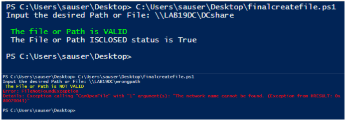

Summary: How to run a check to emulate use in FSAA system scan CIFS/SMB
Issue: Assist with troubleshooting FSAA scans..
Instructions: The script was
written to emulate the IPC$ check in FSAA system scan when CIFS/SMB are targeted. We are
utilizing the windows API to call the CREATEFILE windows function in order to open a file
or I/O device.
Steps to run script
- Launch PowerShell with Admin rights
- Run the script
- Input the desired File or path
- Result should reflect whether file or path is valid or invalid. ( If the result is Valid, it means that the File or path exist and we can read from it )
File Link :
http://downloads.stealthbits.com/access/files/StealthTOOLS/AUDIT/CreateFile%20Script/CreateFile-FSAA.ps1
*** Additional Information ***
Information regarding ISCLOSED message in the result of the scrip: ISCLOSED value relates to the file handle closing. TRUE = handle is closed , FALSE =
Handle Open.
When an application is finished using the object handle returned by
CreateFile, use the
CloseHandle
function to close the handle. This not only frees up system resources, but can have
wider influence on things like sharing the file or device and committing data to disk.
For more information regarding the file and I/O devices supported please
check
https://docs.microsoft.com/en-us/windows/desktop/api/fileapi/nf-fileapi-createfilea
I have attached screenshots from a valid and not valid returns.

Product:
StealthAUDIT
Module: SA
- DC - FSAA - Activity;SA - DC - FSAA - DFS;SA - DC - FSAA - Permissions
Versions:
8.1+
Legacy Article ID:
2094